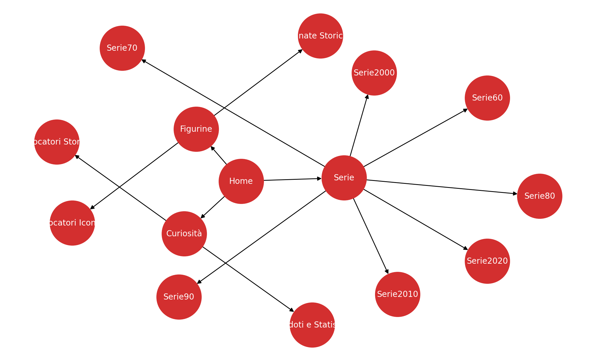
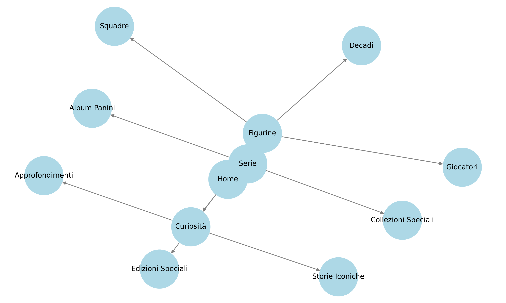
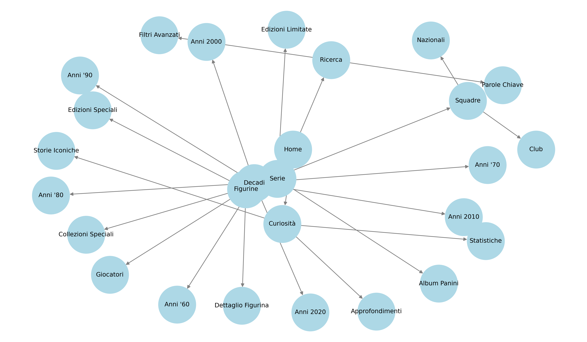
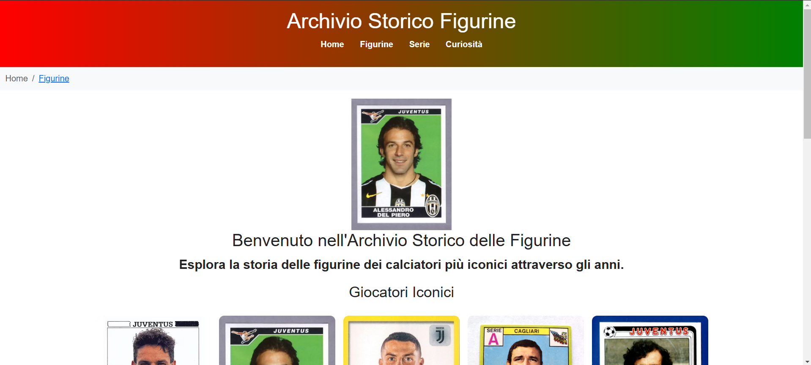
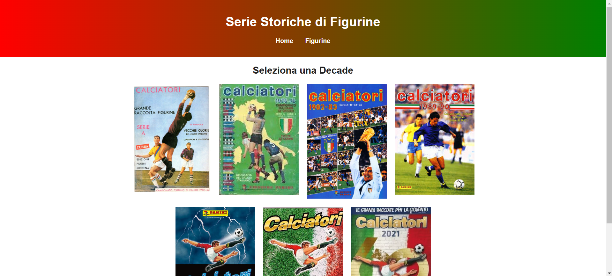
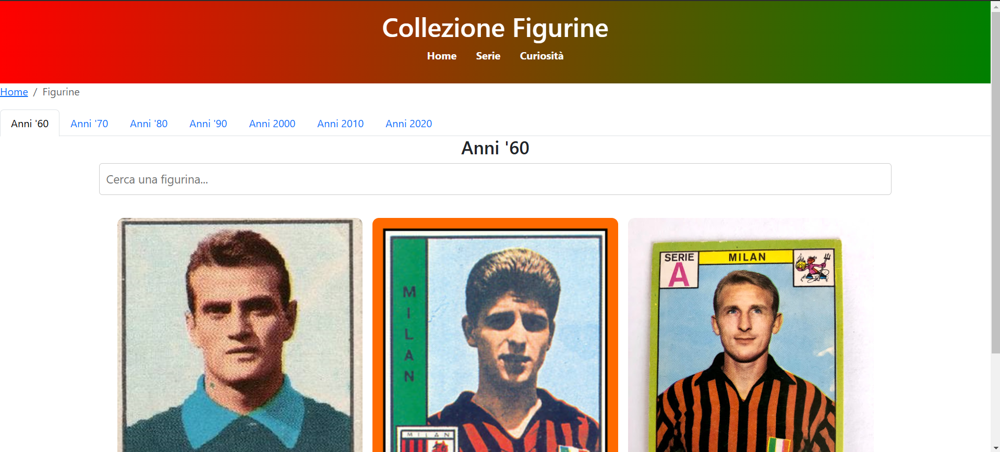

1. Introduzione
Il progetto "Archivio Figurine" è un'iniziativa digitale che mira a raccogliere, catalogare e valorizzare le figurine storiche del calcio italiano, offrendo agli utenti un'esperienza interattiva e intuitiva. Il sito è progettato per fornire un archivio completo e dettagliato che permette di esplorare le figurine attraverso le diverse decadi, con schede descrittive, immagini ad alta risoluzione e approfondimenti storici. L'obiettivo principale del progetto è creare una piattaforma accessibile sia ai collezionisti esperti che ai semplici appassionati di calcio, garantendo strumenti avanzati di navigazione, filtri di ricerca per decade, squadra e competizione, nonché funzionalità interattive come timeline storiche e mappe concettuali. Oltre alla conservazione del patrimonio sportivo, il sito offre anche una dimensione educativa, consentendo agli utenti di scoprire l'evoluzione delle figurine nel tempo e il loro impatto culturale. La piattaforma è ottimizzata per garantire un'esperienza fluida su diversi dispositivi, rendendola facilmente consultabile sia da desktop che da mobile.
2. Brief
2.1 Il sito ha 2 obbiettivi principali:
- Trovare una alternativa a siti ormai rimasti troppo indietro con il passo del tempo.
- Fornire una raccolta storica completa e archiviata in digitale delle figurine dei calciatori
2.2 Il sito ha un target ampliato di pubblico, dal collezionista accanito fino al semplice nostalgico felice di vedere vecchi ricordi d'infanzia
2.3 il sito è pensato anche per un pubblico più giovane per questo è stato reso responsive ai dispositivi mobili, ilsito inoltre è molto intuitivo per evitare ogni difficoltà di interazione
3. Benchmark
Benchmark - Confronto con altri archivi di figurine
Analisi comparativa con altri siti
1. Figurine Forever
Descrizione: Questo sito offre recensioni dettagliate di collezioni di figurine, con un focus particolare sulle serie sportive.
Punti di Forza: Recensioni approfondite con immagini dettagliate delle figurine.
Aree di Miglioramento: Struttura di navigazione migliorabile e categorizzazione più chiara.
Link: Figurine Forever
2. Museo Virtuale della Figurina
Descrizione: Archivio storico delle figurine, con una panoramica sulle collezioni nel tempo.
Punti di Forza: Ampia gamma di informazioni storiche sulle figurine.
Aree di Miglioramento: Design datato e navigazione poco intuitiva.
Link: Museo Virtuale della Figurina
3. Sito Ufficiale Panini
Descrizione: Sito ufficiale con catalogo completo delle collezioni, vendita online e integrazione digitale.
Punti di Forza: Catalogo dettagliato, possibilità di acquisto, iniziative digitali.
Aree di Miglioramento: Navigazione migliorabile, mancanza di una sezione storica dettagliata.
Link: Sito Ufficiale Panini
Confronto con il nostro progetto
- Design e Usabilità: Il nostro sito offre una navigazione chiara con sezioni ben definite per decadi e curiosità.
- Contenuti: Focalizzazione su storia, dettagli e curiosità, mentre i competitor si concentrano su vendita o archiviazione.
- Esperienza Utente: Struttura interattiva con immagini, schede e informazioni arricchite.
4. Struttura
4.1 La mappa concettuale rappresenta la struttura e le connessioni tra le varie sezioni del sito.
4.2 Le relazioni tra le pagine e le sezioni sono mostrate nello schema delle dipendenze.
Schema delle dipendenze più dettagliato.
4.2.1 La Home rappresenta il punto di partenza e collega direttamente alle sezioni principali. La sezione Figurine permette di esplorare il catalogo delle figurine organizzato per decadi, squadre, giocatori ed edizioni speciali. La sezione Serie è dedicata agli Album Panini e alle Collezioni Speciali, con un focus su edizioni limitate. La sezione Curiosità contiene approfondimenti su storie iconiche, statistiche e dettagli extra sulle figurine più importanti. La sezione Ricerca offre un sistema avanzato di ricerca per trovare figurine in base a filtri avanzati e parole chiave.
4.2.2 La sezione Figurine è strutturata per offrire diverse modalità di esplorazione. Le figurine sono suddivise per decadi, permettendo agli utenti di navigare tra collezioni cronologiche dagli anni '60 fino ad oggi. La suddivisione per squadre include club e nazionali, consentendo di trovare figurine in base alla squadra di appartenenza. È possibile cercare figurine basate sul nome del calciatore attraverso la sezione Giocatori. La sezione Edizioni Speciali raccoglie figurine rare, promozionali o da collezione. Ogni figurina ha una pagina specifica con informazioni dettagliate all’interno della sezione Dettaglio Figurina
4.2.3 La sezione Serie include raccolte tematiche e album storici. La sezione Album Panini raccoglie tutte le edizioni Panini classificate per anno. La sezione Collezioni Speciali ospita serie limitate o figurine dedicate a eventi particolari. La sezione Edizioni Limitate contiene figurine prodotte in tiratura ridotta, come quelle autografate o olografiche.
4.2.4 La sezione Curiosità offre contenuti editoriali legati alle figurine. La sezione Storie Iconiche raccoglie racconti sulle figurine più ricercate e curiose. Nella sezione Approfondimenti sono presenti analisi storiche sui trend delle figurine e la loro evoluzione nel tempo. La sezione Statistiche fornisce dati sulla rarità, il valore di mercato e la distribuzione geografica delle figurine.
4.2.5 La sezione Ricerca consente di trovare rapidamente figurine tramite filtri avanzati e parole chiave. I filtri avanzati permettono di selezionare figurine in base alla decade, alla squadra, al giocatore e alla rarità. La ricerca per parole chiave consente di individuare figurine specifiche inserendo direttamente il nome o termini correlati.
Il sito è stato progettato per fornire un sistema di navigazione chiaro e logico, dove ogni sezione è strettamente collegata alle altre in base alla funzione svolta. Figurine, Serie e Curiosità rappresentano le sezioni principali. La Ricerca e i Filtri Avanzati permettono di trovare rapidamente i contenuti desiderati. Ogni figurina ha la sua pagina dettaglio con informazioni approfondite.
5. Wireframes
Di seguito sono presentati i wireframes delle pagine principali:
Home page del sito in cui troviamo i giocatori iconic e storici
La sezione serie dove vengono divise le decadi in base all'annata dell'album
La sezione figurine dove vengono divise le figurine in base all'annata.
6. Usabilità
6.1 Accessibilità e Navigazione
Menù chiaro, leggibile e intuitivo oltre che sviluppato anche per mobile, breadcrumbs, barra di ricerca avanzata.
6.2 Compatibilità tra Dispositivi
Responsive design, test su più browser, ottimizzazione della velocità e della qualità.
6.3 Ottimizzazione dell’Esperienza Utente
Struttura visiva chiara, feedback immediato e grande intuitività come ribadito in precedenza
7. Servizi
7.1 Funzionalità Implementate
Ricerca avanzata, navigazione semplice, sezione curiosità.
7.2 Tecnologie Utilizzate
HTML5, CSS3, Bootstrap, JavaScript, jQuery, Dublin Core Metadata.
7.3 Accessibilità e Supporto
Compatibilità con screen reader, contrasti visivi ottimali.
8. Bibliografia e Sitografia
Fonti utilizzate per il progetto: